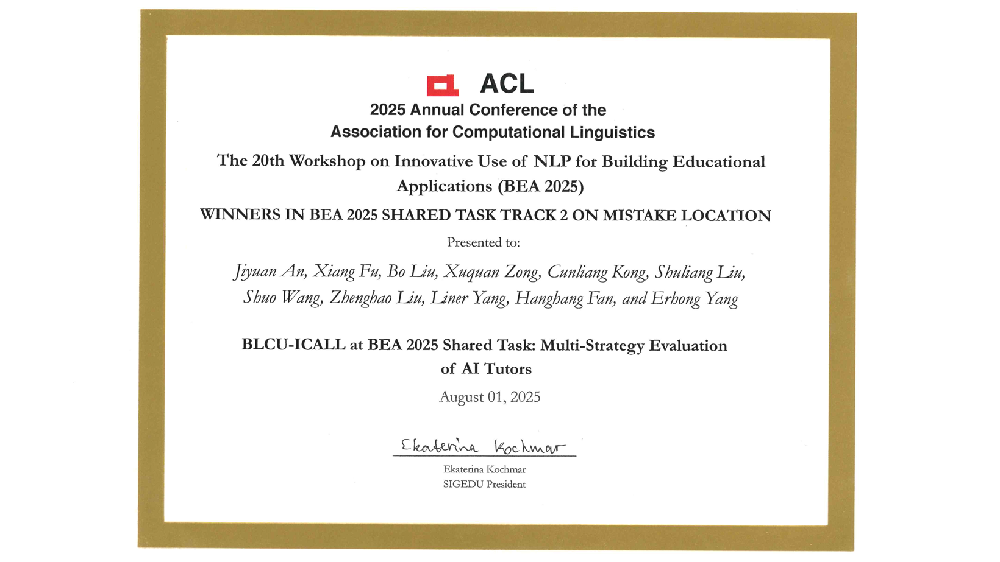

Jiyuan An / 安纪元
Master's Student | Large Language Model · AI4Education · AI4Code
About Me
Jiyuan An is a master's student specializing in Large Language Models, Intelligent Computer-Assisted Language Learning, and AI-assisted code generation. As a member of the Language Monitoring and Intelligent Learning Research Group (BLCU-ICALL) at Beijing Language and Culture University, under the supervision of Prof. Erhong Yang and Assoc. Prof. Tianlin Yang.
My research interests include large language model applications, model interpretability, prompt engineering and tool use, and intelligent computer-assisted language learning. Currently, I focus on exploring LLM applications in education and improving model controllability and interpretability.
Education
M.S. in Language Intelligence and Technology
B.S. in Data Science and Big Data Technology
Research Interests
Large Language Models
LLM applications, model fine-tuning, prompt engineering, tool use and agents
Model Interpretability
Exploring internal mechanisms, decision-making processes, and controllable generation of LLMs
Intelligent CALL
Computer-assisted language learning, automated feedback generation, writing assessment
Code Generation & Understanding
LLM-assisted code generation, program understanding, and automation
Publications
2025
2024
Research Projects
Intelligent Writing Assistant
OngoingAn intelligent writing assistance system based on large language models, providing real-time feedback and improvement suggestions.
Cross-Lingual Feedback Generation
CompletedA cross-lingual automated feedback generation system for language learners, supporting multilingual environments.
AI Tutor Evaluation Framework
CompletedMulti-strategy AI tutor evaluation framework, winning 1st place in BEA 2025 Shared Task.
Honors & Awards

BEA 2025 Shared Task - Track 2 Winner
20th Workshop on Innovative Use of NLP for Building Educational Applications (ACL 2025)
BLCU-ICALL at BEA 2025 Shared Task: Multi-Strategy Evaluation of AI Tutors
August 2025

National Scholarship for Graduate Students
Ministry of Education of the People's Republic of China
Awarded to outstanding graduate students for academic excellence and research innovation
November 2025
First-Class Academic Scholarship
Beijing Language and Culture University
Received for three consecutive years
November 2023, 2024, 2025
Academic Service
Reviewer
- NLPCC 2025, 2025.06
Organizer
- ...